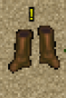
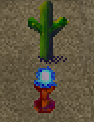

Overview
A Shoe Full of Sand
Description: No Description added.
Location: South of North Coast Village
Difficulty: Hard
Reward: Sand
A Shoe Full of Sand is a puzzle-based dungeon with no NPC enemies until completion.
The objective is to complete two maze floors before receiving your reward.
Tasks
1: Complete the 2 mazes.
2: Collect the Sand.
NPCs You May Encounter
There are no enemies present during the dungeon itself.
A single mob appears only after completing the dungeon when preparing to exit.
Lesser NPC

Name:Desert Wraith
HP: 2250
Attack: 700
Defense:PDef: 10, RDef: 15 and MDef: 15
Boss Mechanic:Nothing
May Drop:Nothing
Maps
Entrance:

Maze Mechanics
The maze alternates between two different tile layouts on the same map,
creating confusion as the floor visually shifts between states.
Solutions
Completion
Once both maze floors are completed, you are transported to a reward room.

Here you can collect your reward and exit via the blue orb.
Drops / Rewards
| Item |
Amount |
| Orb of Experience |
50,000 |
| Sand |
250x |
| Random Resources |
Ores, Crappies, etc. |
Misc Info
Sand obtained from this dungeon can be traded with NPC vendors for various items.